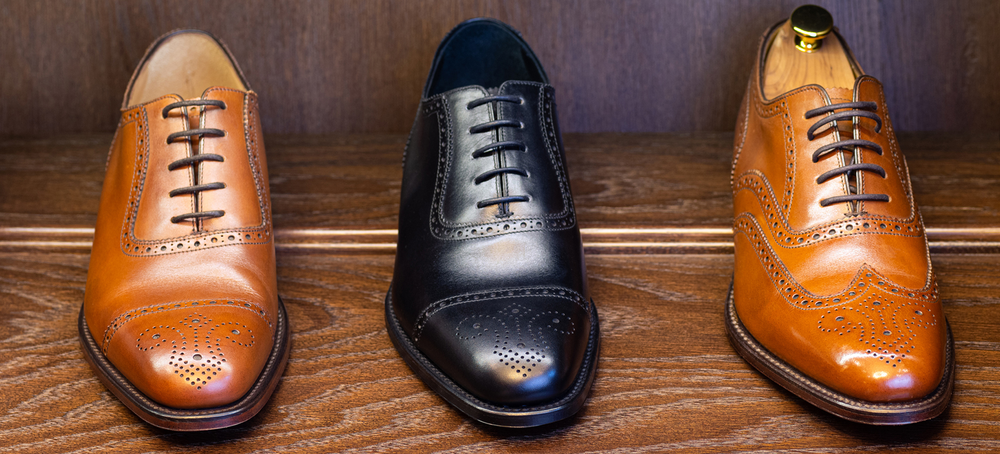
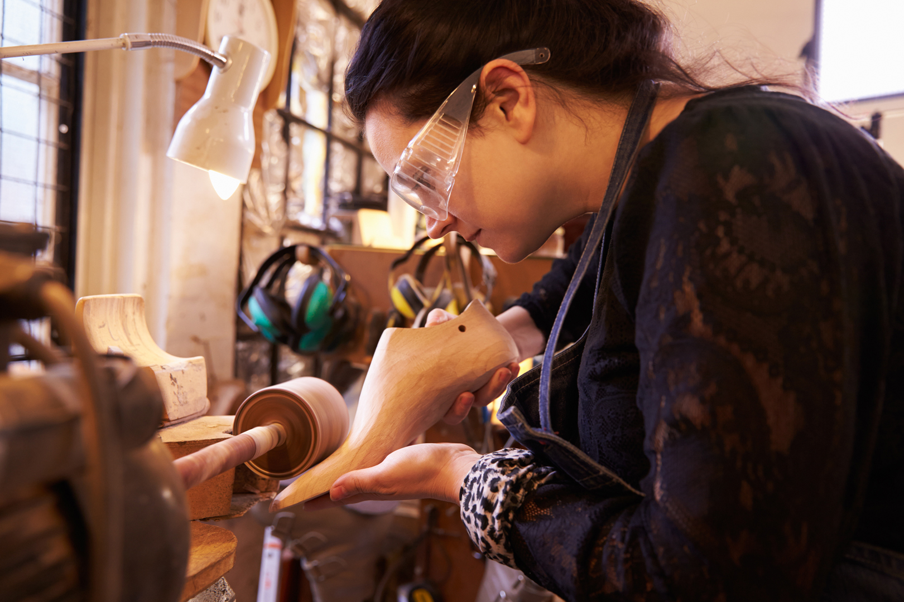

Das leisten wir für Sie
Reparieren:
Kommen Sie mit hochwertigen Lederwaren zu uns, wenn etwas kaputt
ist. Wie zum Beispiel: ein eingerissener Riemen am Rucksack, ein
Reißverschluss an der Tasche, der sich verhakt hat, schief
getretene Stiefelsohlen, ein locker gewordener Schuhabsatz. Der
Erhalt von schönen, Ihnen lieb gewordenen Qualitätswaren ist uns
ein Anliegen. Wegwerfen war gestern!
Kreieren:
Sprechen Sie uns an, wenn Sie exklusive Schuhe tragen wollen,
Modelle nach Ihren modischen Vorstellungen und der Eigenart Ihrer
Füße.
der Fertigung individueller Maßschuhe gibt es auch
kostengünstigere Varianten, wie etwa die Maßkonfektion mit
vielfältigen Wahlmöglichkeiten. Zögern Sie nicht!
Verbessern:
Scheuen Sie sich nicht, auch mit guten, industriell gefertigten
Qualitätsschuhen zu uns zu kommen, wenn Sie spezielle
Anpassungswünsche haben. Wie zum Beispiel: Schuhe weiten,
Stiefelschäfte kürzen, Spezialsohlen anbringen,
Beinlängen-Differenz ausgleichen, Absätze erhöhen. Es ist uns
wichtig, dass Ihre Füße eine passgenaue Bekleidung haben.
Schmerzen sind vermeidbar.
Maßschuhe
Der Weg zu ihrem Maßschuh

2. Die Auswahl von Farbe und Form
3. Die Entscheidung fürs Leder

4. Die Herstellung des Leistens
5. Die Fertigung des Schuhs – Teil I
7. Die Fertigung des Schuhs – Teil II
8. Letzte Anpassungen und Feinarbeiten
Der zeitliche Aufwand bei der Herstellung Ihrer individuellen
Maßschuhe kann beträchtlich variieren, je nach Modell, Machart und
Sonderwünschen. Wir rechnen mit mindestens 30 Arbeitsstunden. Der
gesamte Arbeitsprozess zieht sich in der Regel über acht Wochen
hin.
Dreimal sind Sie in dieser Zeit gefragt: Beim Vermessen und
Wählen des Modells, bei einer ersten Anprobe und schließlich am
Tag der Fertigstellung.
Rechnen Sie pro Paar mit einem Preis
zwischen 2000,– und 3000,– Euro. Sobald wir einen fußgerechten
Leisten für Sie gefertigt haben, können wir ihn für alle
Nachfolgemodelle nutzen – und Sie sparen bares Geld. Damenschuhe
sind in der Regel aufwendiger und daher etwas teurer als Modelle
für den Herrn.
Stimmen
Das sagen unsere Kundinnen und Kunden:
Mir kommt es aufs Preis-Leistungs-Verhältnis an. Und das stimmt bei
„Formschön“.
Einmal habe ich einen sehr passenden Spruch gehört: „Wer billigt
kauft, zahlt doppelt!“
Ich komme gerne in die Maßschuhmacherei Formschön, weil mir die
Atmosphäre gefällt und weil ich mich immer gut beraten fühle.
Wenn ich all diese Plastikschuhe in den üblichen Auslagen sehe,
denke ich: Welche Materialvergeudung! Da sind handgefertigte Schuhe
doch viel nachhaltiger.
Ich weiß nicht, wie viel Zeit ich immer damit vertan habe, Schuhe zu
finden, die mir sowohl gefielen als auch wirklich gut passten.
Meistens entschied ich mich dann für etwas optisch Ansprechendes und
nahm dafür Schmerzen an den Füßen in Kauf. Damit ist nun Schluss.
Ich bin 16 Stunden am Tag im wahrsten Sinn des Wortes auf den Füßen.
Und da merkt man schnell, welches Schuhwerk man trägt. Seit ich
einmal gemerkt habe, welchen Unterschied es macht, ob die Schuhe wie
angegossen passen oder nicht, ist für mich klar: Die Maßschuhe von
Formschön sind ihren Preis wert.
Ich hasse das Einkaufen. Und deshalb bin ich froh, dass es die
Schuhmanufaktur Formschön gibt. Dort weiß ich, was ich für mein Geld
bekomme. Außerdem hält ein Paar Maßschuhe einfach lange – und
erspart es mir, laufend wieder auswählen und anprobieren zu müssen.
Maßschuhe kann ich mir nicht leisten. Zum Glück habe ich ein
unproblematisches Paar Füße, für die ich leicht hochwertige
Konfektionsschuhe finde. Sie müssen zeitlos gut aussehen und aus
bestem Leder gefertigt sein. Dann bringe ich sie im Laufe der Jahre
immer mal wieder zur Schuhmanufaktur Formschön, wenn Absätze
repariert oder neue Sohlen aufgebracht werden müssen. Das lohnt
sich!